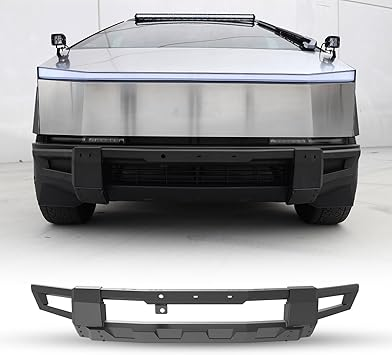
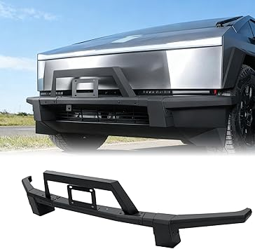
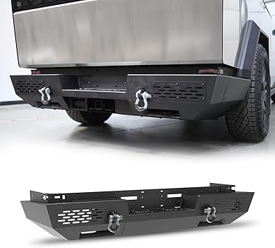
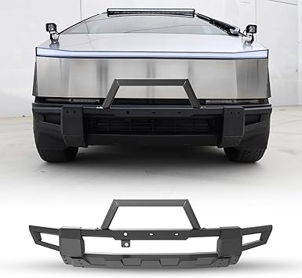

← cybertruckbumper.com
Cybertruckbumper in 2026: Worth the Upgrade?
May 2026
If you've been researching cybertruckbumper lately, you know the market changed a lot in 2026. New options, shifting prices, and plenty of noise to cut through.
Buyer Traps to Watch For
Going with the cheapest option — Budget cybertruckbumper cut corners. Spending 20% more often gets something that lasts 3x longer.
Overbuying features — Most people use 20% of high-end cybertruckbumper features. Don't pay for what you'll never touch.
What Separates Good From Great
- Dimensions matter — Read the actual measurements. "Large" means different things to different cybertruckbumper manufacturers.
- Material grade — Higher-grade materials in cybertruckbumper last longer and perform better, even when designs look similar.
- Compatibility — Always double-check that cybertruckbumper fits your specific setup before ordering.
- Brand track record — Established cybertruckbumper brands have more to lose from bad products. That accountability matters.
Worth Your Money




In Summary
Our comparison tables on cybertruckbumper.com break down options by price, features, and ratings. Start there.
Affiliate Disclosure: As an Amazon Associate, we earn from qualifying purchases. This doesn't affect our recommendations.